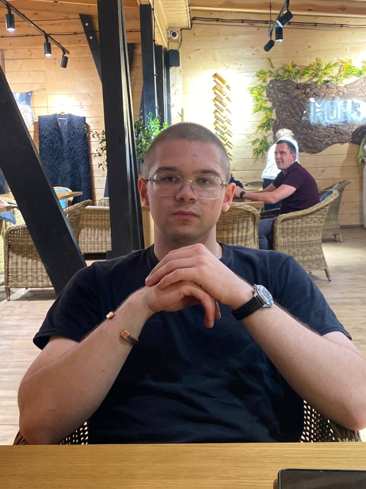
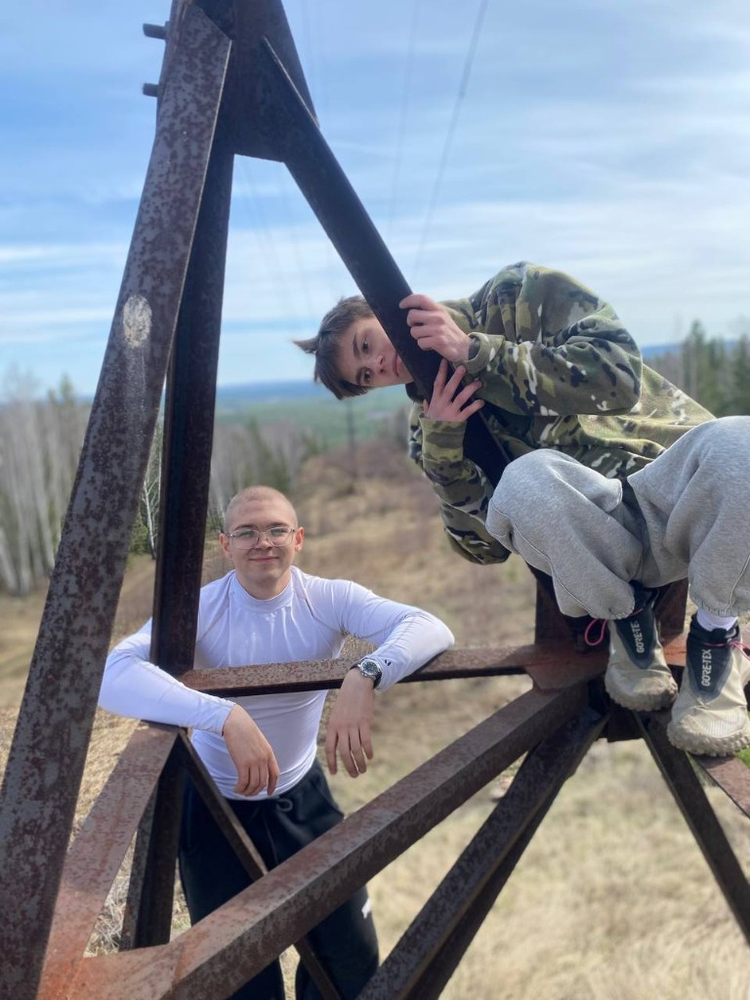
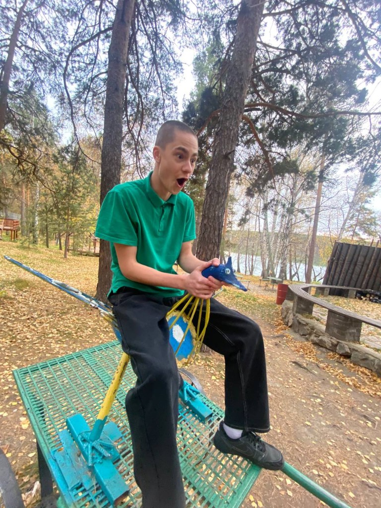
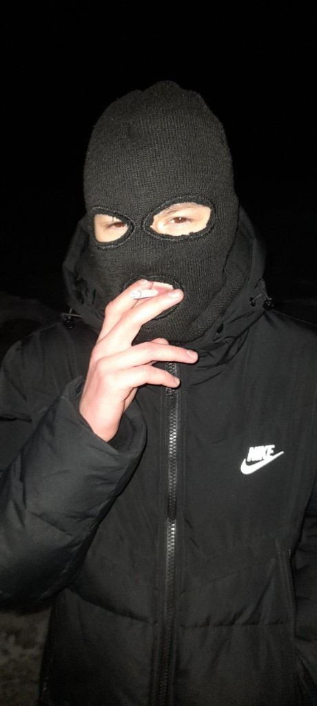
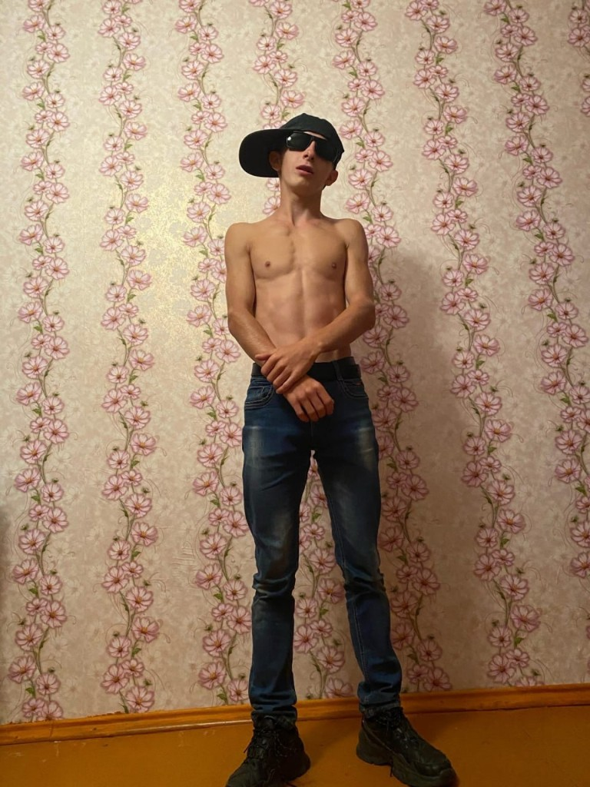
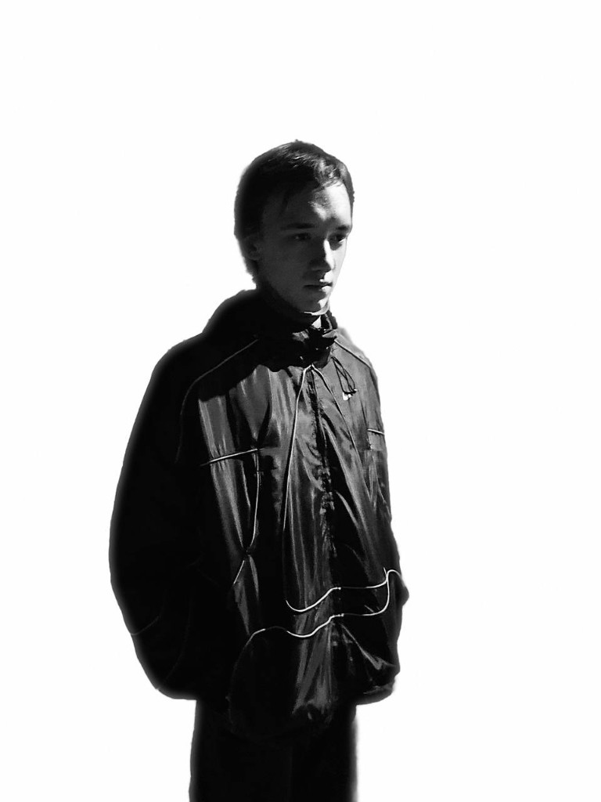
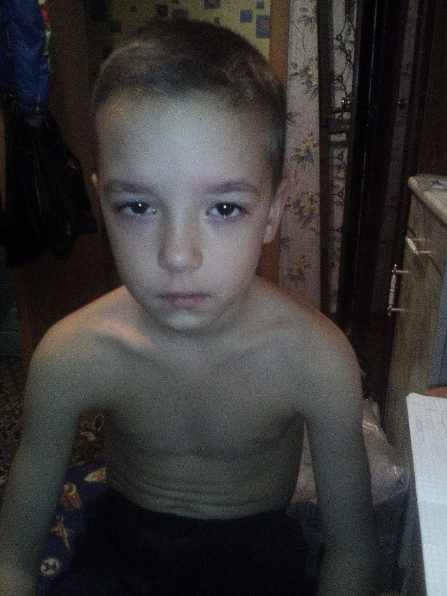
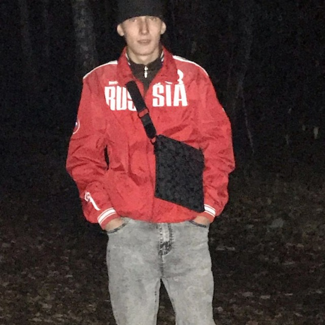
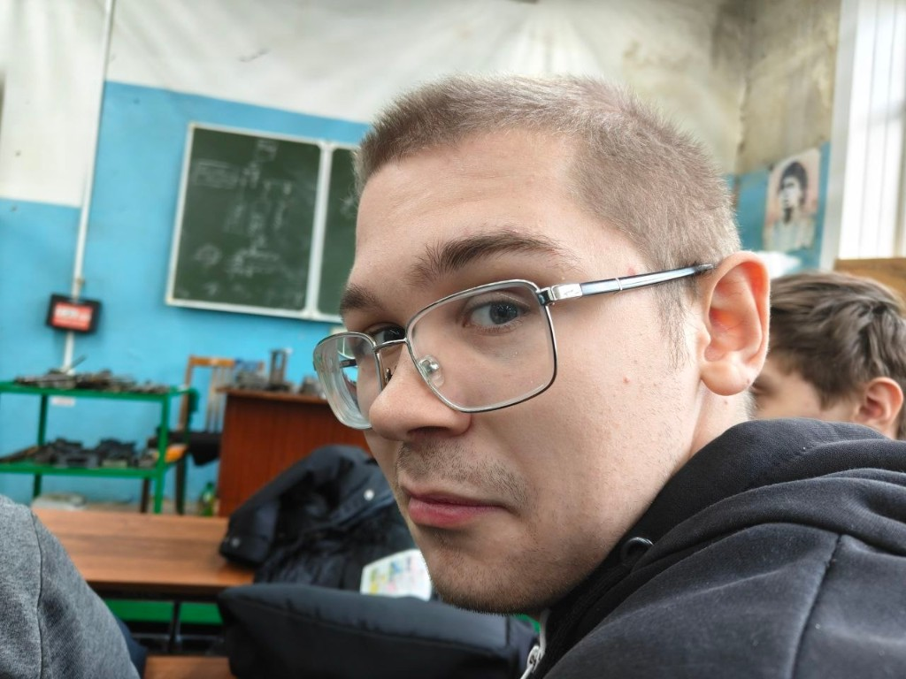

2024
Мечта о МГУ
Егор — обычный парень 18 лет. Очки, учёба, планы. Мечтал поступить в Московский государственный университет. Готовился, верил, старался. Всё казалось возможным.
«У него ничего не получится» — Т. Говнадьевна
18 лет. Очки, мечта и три оценки, которые решили всё. Это история о том, как один классный руководитель сломала целую жизнь — и как голуби на площади стали единственными соперниками, которых он ещё мог победить.

Егор — обычный парень 18 лет. Очки, учёба, планы. Мечтал поступить в Московский государственный университет. Готовился, верил, старался. Всё казалось возможным.
Классный руководитель, которую одноклассники прозвали псевдоженой. Всячески занижала оценки, не пускала к экзаменам, шептала на каждом родительском: «У него ничего не получится». И, кажется, добилась своего.
В МГУ не поступил. Не потому что не умел — потому что система и одна женщина с красной помадой решили иначе. Мечта рассыпалась, как тетрадь после дождя.
Егор просто так не хотел сдаваться. Он решил дать отпор этой шкуре — Татьяне. Но для этого нужен был союзник. Или авторитет. Дальше — сага →
10 секунд, которые длились вечность

Глава IЕгор не стал терпеть унижения. Он поехал к главному авторитету своего района — Димасу Черных. Легендарному. Непобедимому. Тому, кто однажды залез на ЛЭП и не сломался.
Но...

Глава IIМежду ними началась перепалка. Димас залез на авторского петушиного орла и начал орать на Егора сверху. Егор же держал свою оппозицию — как тёмный мечник.
В итоге Егор проиграл в битве и был вынужден бежать. Орёл победил. Мечник — нет.




Егор не стал терпеть поражение. Он позвал своего давнего древнего плесневелого друга — «Джорджика». Они решили выждать момент и напасть на Димаса.
Но они не ожидали, что предстоит встретить помимо Димадрика ещё и Ведралю Буйного.
И тут началась битва...

Глава IVБитва длилась очень много лет. И спустя 10 секунд Егор одолел Димарика Комарика и сразу же ринулся помогать Мастеру Угвей...
Но... он... не... успел...
Маваши пожертвовал собой и как камикадзе одолел Ведралю Гениталю.
Егор тут же принялся оплакивать, слюнявить погибшему Гоше. Но он не забыл его!!!!
Три фото одного человека. Одна сломанная судьба.

он же Говнадьевна · псевдожена · классный руководитель
«У него ничего не получится.»
Если вы видите эту женщину — не поддавайтесь на улыбку. За ней стоят три двойки по русскому и один сломанный парень.
Накопив всю ярость во плоти
Егор, оплакав Джорджика, не сдался. Накопив всю ярость во плоти, он пошёл разбираться к Татьяне... Дрочиловне...
Но, кароче, не справился.
Забухал. Спился. Сторчался. Обдрочился.
Стал бомжом. Пил пиво. Гонял джунгарика. Дрался с голубями на улице — за ставки.
Жил он мастью, а умер к счастью.
Земля тебе бетоном.
Цифры, которые не попали в аттестат
Егор, ты мог бы быть студентом МГУ.
Вместо этого ты стал легендой двора.
Мы помним. Голуби — тоже.